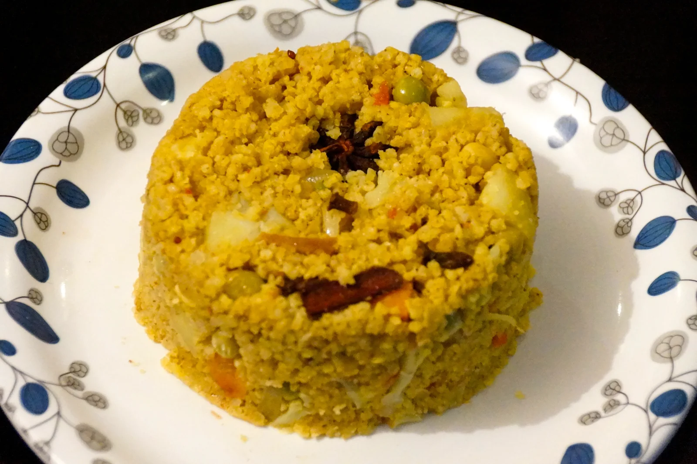
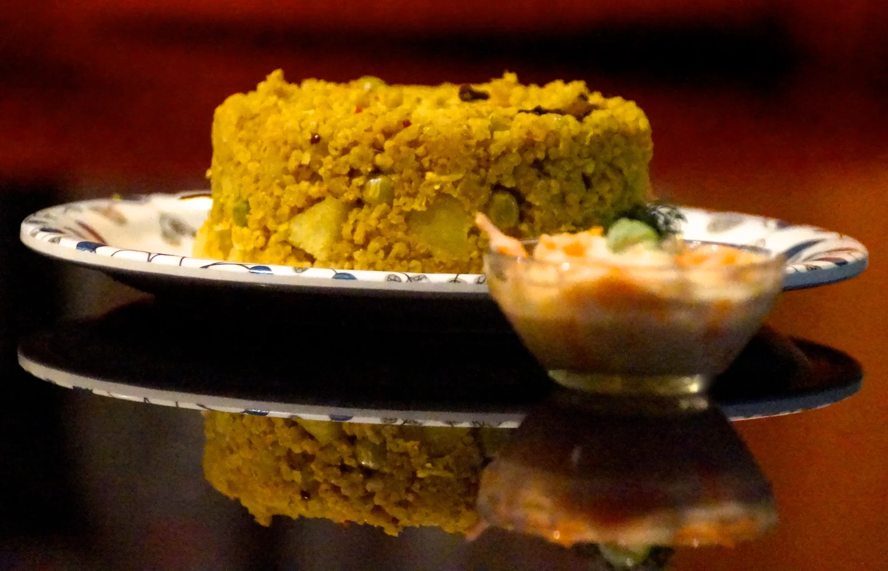

BIRYANI/ PULAV with
Millet Zone's
'Siri Dhanya' MILLET
PULAV with KODO MILLET/Arikalu
Ingredients
- Kodo millet - 1 cup
- Water - 2 cups
- Carrot- cut into small cubes
- Beans
- Caspicum (optional)
- Green peas
- Onion - finely chopped
- Ginger garlic paste - 1 tsp
- Bay leaf - 1 or 2
- Green chilli - 2 or 3
- Mint leaves (10-12)
- Salt - As needed
- Ghee/ oil - 3-4 tblsp
- Cinnamon - 1 inch piece
- Fennel seeds/ saunf - 1 tsp
Method:
- Rinse 1 cup of Kodo millet with one finger, without squuezing it. Let the 1 cup of 'Siri Dhanya' soak in water for 30 minutes.
- Place a small pressure cooker on heat with oil or ghee. In medium flame, add cinnamon, bay leaf and fennel. Stir for 4-5 minutes.
- Add onion and give it a proper mix. Add ginger garlic paste and stir it for 3 minutes.
- Let it cook for a minute in medium flame. Add the chopped vegetables, mint leaves. Let it sizzle for couple of minutes at a medium flame.
- Add needed salt for the vegetables.
- drain the water from the previously soaked millets. Dont squeeze them, just stir and drain.
- Add washed, drained millet to it and mix very well. Let it get a bit dry. Heat should always be in a medium flame.
- Add 2 cups of water, needed salt and let the water boil.
- Mix well and cook for 2 whistle's in medium or low heat.
- After 2 whistle's, let the steam out and the mix well. Serve with raita.
NOTE: This can be made with Little, Browntop and Barnyard millet too.

BIRYANI with
FOXTAIL MILLET/Korrabiyyam
Ingredients
- 1 cup hulled Foxtail millet
- 2 cups water
- Salt as needed
- 2 to 3 tbsps- Ghee or oil
- carrots - Chopped as cubes
- peas - half cup
- beans
- potato - Peeled and chopped as cubes
- small onion sliced
- Few mint leaves chopped
- 1 tsp. grated ginger or ginger garlic paste
- Bay leaf
- 2-3 green cardamoms
- 4 Cloves
- Small Cinnamon stick
- 1 small Star flower
- Shahi Jeera powder or Biryani Masala - half spoon or full
Method:
- Rinse 1 cup of 'Siri Dhanya' and soak millets in water for about 20-30 minutes. Remeber not to squeeze the garin, just to stir.
- Heat a wok /pan with oil, saute the bay leaf, green cardamom, cloves, Cinnomon stick and star flower till they begin to sizzle.
- Add ginger garlic paste and mix well till you get a good aroma
- Add vegetables and mint leaves, stir for 3 to 4 minutes.
- Pour 2 water and add salt as needed
- Bring the water to a boil.
- Drain off the water from the previously soaked 'Siri Dhanya'. Add them to the boiling water
- Cook on a medium to low flame until they are completely cooked. If the biryani still has residual water, Heat the millet on high flame, just evaporate the water. Take it off the stove.
- Let the steam come out. Serve with raita!
NOTE: This can be made with Little, Kodo, Browntop and Barnyard millet too.
BIRYANI with
LITTLE MILLET/Samelu
Ingredients
- Little Millet – 1 cup
- Mixed vegetables – Peas, Carrot, Brocoli etc.
- Water – 2 cups
- Oil – 2 or 3 tablespoons
- Onion – 1 big
- Tomato chopped- 1 small
- Ginger garlic paste – 2 teaspoon
- Green chili (2–3 slits)
- Turmeric powder – 1/4 teaspoon
- Red chili powder – 1/2 teaspoon
- Garam masala – 1/2 teaspoon
- Mint leaves (8-10)
- Coriander leaves finely chopped
- Curd – 2 teaspoon
- Fennel seeds – 1/4 teaspoon
- Cinnamon sticks (2 or 3)
- Cardamom 2 or 3
- Cloves 2 or 3
- Star anise - 1
- Bay leaf – 1
Method:
- Wash and soak Little millet in water for 20-30 minutes. After 20 minutes and keep it aside.
- Heat oil in a wok/pan. Add spices like bay leaf, cinnamon, cardamom, cloves, star, and the fennel seeds. Saute for 3 minutes.
- Add chopped onion, green chilies chopped vertically and mix well. Add the ginger garlic paste and mix well for 5 minutes.
- Add tomato and saute well until it gets cooked well and become mushy. Stir it well for 2 minutes.
- Add mint leaves and coriander leaves. Saute well.
- Add 2 teaspoons of curd and mix well.
- Add the chopped vegetables of choice, needed salt, turmeric powder, garam masala, red chili powder and mix again for a few more minutes.
- Drain the water from the soaked 'Siri Dhanya'. Dont squeeze while draining, just stir.
- Add the soaked 'Siri Dhanya' without the water and mix well.
- Add 2 cups of water and salt. Mix well.
- Cover the pressure cooker and cook for 2 whistle.
- Turn off the flame. Let the steam go out. Open the pressure cooker, fluff it up with a fork.
- Serve samai biryani with raita of your choice.
NOTE: This can be made with Little, Kodo, Browntop and Barnyard millet too.
Source: Original Millets Zone · Millet biryani and pulav
Content captured 25 October 2026. Reorganized for reading; purchase-related material excluded.
Content captured 25 October 2026. Reorganized for reading; purchase-related material excluded.